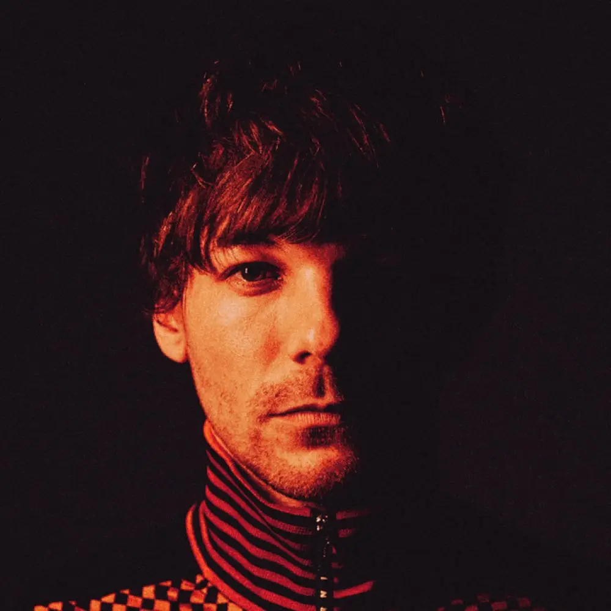
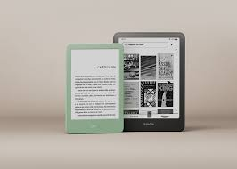
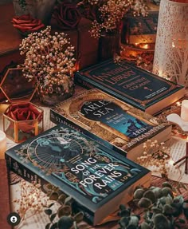

Caminhos diferentes: ex-One Direction movimentam fãs com novos projetos
- Harry Styles inicia nova era com cartazes “We Belong Together” e surpreende fãs
- Louis Tomlinson abre coração sobre inseguranças, carreira solo e relação com fãs
- Zayn Malik gera burburinho com rumores de turnê no Reino Unido em 2026

Possível título de música nova estreando em 2026
- Harry Styles atiça fãs para seu retorno usando a frase “we bwlong together” em 2026

Louis Tomlison fala com sinceridade medo de ser esquecido
- Em entrevista recente, Louis Tonlison compartilhou como foi enfrentar a separação da banda
Zayn Malik e burburinho de tour solo em 2026
- Os fãs estão enlouquecidos depois de anúncios misteriosos e possíveis datas de shows

Kindle se torna o principal meio de leitura entre jovens
- Dispositivos digitais ganham espaço e mudam a forma de consumir livros.

Romances e fantasias lideram leitura no Brasil
- Histórias envolventes seguem como as preferidas do público.
Criar hábito de leitura com e-books
- A leitura digital ajuda a manter a constância no dia a dia.